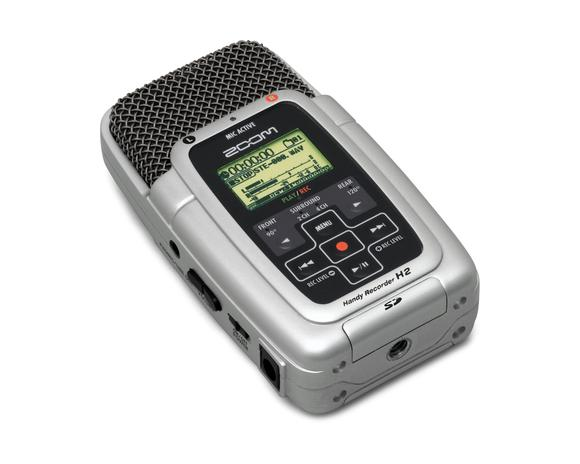
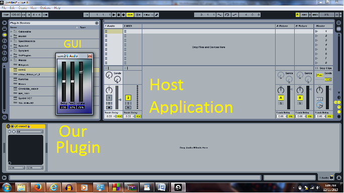

When producing recorded music it is common to apply a reverberation effect to audio, as this allows the audio to sound as if it was created in some place other than a studio. For instance, a rock group can record a song in the studio and apply reverb in such a way that it sounds like the song was recorded in a much larger space, such as a large arena. One way to produce this effect is to employ the mathematical operation of convolution on the original audio signal and the impusle response of the space one wishes to mimic. This impulse response is of the form of a recording of a short burst of sound going off in the space, created by something like a popped balloon or a starter gun. It is also possible to create an impulse response by deconvolving the response to a sinusoidal sweep of frequencies with the original sinusoid. Reverb is applied to recorded signal by either a hardware or software unit, with the later typically taking the form of a Virtual Studio Technology (VST) plugin used in a Digital Audio Workstation (DAW).
The goal of this project is to comprehensively create such a plugin from data collection of impulse responses at various locations to the implementation of a VST plugin in C++. We additionally sought to implement a design which allows the user to apply reverb to multiple channels of a surround sound recording to better mimic the sound of a particular space
In selecting where to record impulse responses, we sought to find spaces which we imagined would have responses that were both interesting and unique from other spaces around the North Campus of the University of Michigan. One obvious choice was the vestibule of the main entrance to the Duderstadt Center. We knew this space to provide a response of very high duration and intensity. We also chose to record impulse responses in the atrium of the EECS Building, the EECS 1303 lecture hall, on the middle of the North Campus Diag, and underneath the Lurie Bell Tower.
We were presented with a few options for recording impulse responses. The first was the generation of an impulse. For this we opted to record the popping of a balloon, given that balloons are more readily accessable and less potentially dangerous than starter guns and that a frequency sweep may not be as well suited for many of the open spaces we wished to record in. In selecting a recording device, we chose one of the Zoom H2 recorders available for checkout at the Duderstadt Center, as it was easily obtainable and provided a good balance of recording quality and portability. Additionally, this recorder allowed us to record the impulse response from the front, rear, left, and right sides of the device, providing a quadrophonic or 4.0 surround sound response. At this point we carried out impulse response recordings at each planned location.
Once we had collected multiple takes of all impulse responses of interest, we were able to begin processing our data.
We concluded that the best way to initially interpret our data would be load it into Matlab for analysis. We initially ran in to some issues with importing surround sound .wav files, as Matlab seemed best suited for mono (1.0) or stereo (2.0) audio. We were able to 4-channel .wav file as 2 separate 2-channel .wav files. We could then plot the impulse response of each channel and compare between channels and impulse responses. We quickly noticed that some of the impulse responses which were recorded with high microphone gain demonstrated clipping, where the microphone was not able to represent the entire signal. Once this comparison was complete, we decided to test the feasibility of using our impulse responses for convolution reverb in a sample case. We imported an example 5.1 surround .flac file (which loaded in Matlab as a N*6 matrix without error or preprocessing) and convolved, using Matlab's built in conv() function, each channel of our impulse response with the corresponding channel of the example audio file. This procedure behaved as we expected it to.
When brainstorming methods to implement our convolution reverb algorithm, we chose to develop the application in C++. This method was by far the most extensive and challenging way to develop a digital processing effect, however upon completion it proved to be the most rewarding. Learning to use C++ classes, SDKs, dynamically linked libraries, and build dependencies to perform audio manipulation gave light to a level of technical insight that has extended itself beyond the scope of computer science topics covered in our studies thus far.
The first and one of the more difficult aspects of this project, was understanding the Steinberg VST SDK (software development kit). This SDK/API creates the link between the digital audio effect program and the host, commonly a digital audio workstation (DAW). The majority of the SDKs power is derived from the "audioEffect.cpp," "audioEffectX.cpp," and their respective headers. Since this SDK is dedicated to class derivation, it is necessary to make use of the "audioEffect" member functions and subclasses to create a working audio effect.
The "background events" of the SDK primarily feed audio frames or MIDI data from the host environment into a VST program for processing. This processing always takes place in the process() and/or processAndReplace() functions that are inherited from the "audioEffect" class. These functions are called upon iteratively to process audio data in small chunks, or "sample frames," and then output the same "sample frame" back into the host environment. The code implemented in these functions drive the primary characteristics of the audio effect and is where the majority of processing takes place. These functions can absolutely be classified as a series of "Systems" according to EECS 451 terminology.
In addition to familiarizing ourselves with the Steinberg VST SDK, we had to make use of additional libraries that contained certain functions that are not available in the SDK and other C standard libraries.
The Libsndfile library is a massive C++ library that is used for reading from and writing to files that contain sampled sound. This library was necessary because it allows .WAV files to be imported into .cpp files; and for the conversion of audio data into arrays of any typeCast. Since the Steinberg SDK handles audio in floating point arrays, libsndfile library provided the perfect gateway for converting our impulse response (in .WAV format), to an array of floating point data, where it could then be properly convolved with an input signal.
The second library used was the FFTW library. This library is optimized for calculating discrete Fourier transforms. We used specific functions in this library to perform transforms of our input signals and transient responses. This allowed for a faster and easier way to perform convolution in real time.
In order to compile our files with the above libraries and supporting SDK files we had to make full use of an integrated development environment. A huge part of debugging was making sure that all of the correct libraries were properly linked to the compiler. Only a small amount of this open source software is well documented so it took a significant amount of trial and error to link the correct library extensions. In addition to linking libraries, the IDE we used was able to compile all of the files into a dynamic-link library (.dll) which is standard format for VSTs on a Windows platform.
Writing our convolution function took a lot more effort than plugging into the standard convolution equation. If we were creating a convolution reverb effect that is implemented post processing, then it would have been that easy. Due to the nature of the VST SDK, the size of the input signal sample frame is unknown until it receives the parameter from the host application. Also, this sample frame size is going to be significantly smaller our impulse responses, which average around four seconds long. Because the resulting length of a convolution is the size of the input + the impulse -1, and the length of our signals are so disproportionate, we had to adopt the "Overlap-add method." It is described as an efficient way to calculate the convolution of a long signal with a considerably more finite signal.
After calculating the convolution of the two signals in the frequency, the IDFT of the resulting signal was linked to an array of float pointers. However this resulting array is significantly bigger than the allowed in and out sample frame length, which must stay constant for both the input and output. To account for this limitation, the remaining data of the full convolution signal was stored into a buffer where it could overlap with the next iteration of processAndReplace(). To reiterate our length limitation, it is possible for multiple iterations to occur before the first convolution signal has completely been popped from the buffer. These repetitions of convolution, data chopping, storing, and adding onto the "overlap" made it possible to accomplish convolution without having to resort to circular convolution. The implementation of this method can be seen in our processAndReplace() function in the ConvRev.cpp. Also see figure below.
After successfully compiling the project into a single dll file, there was apparent bit distortion and caused the host function to run slowly. The large amount of memory and the size of arrays needed to hold the impulse response, DFTs, and resulting convolution signal, lead to a tremendous amount of calculations per iteration of processAndReplace(). We were able to make some improvements by readjusting specific loops in our algorithm, adjusting the buffer size, and decreasing the length of the impulse (despite theoretical degradation, it was an upgrade). This gave some improvements but the overall sound was not as crystal clear as we had hoped for. We made attempts at pushing the algorithm to support multithreaded processing, but due to time and knowledge limitations we were unsuccessful.
In summary, we were able to create, from start to finish, a plugin which applies a convolution reverb effect. There are certainly many ways in which our project can be improved. The first and foremost is the implementation of a more efficient convolution algorithm. With more effeciency we would be able to apply reverb to multiple input channels and fulfill our goal. Our plugin also stands to be improved by the addition of features allowing the user to select between or upload their own impulse responses as well as control some of the parameters of the effect, such as dry/wet balance, attack, and sustain.